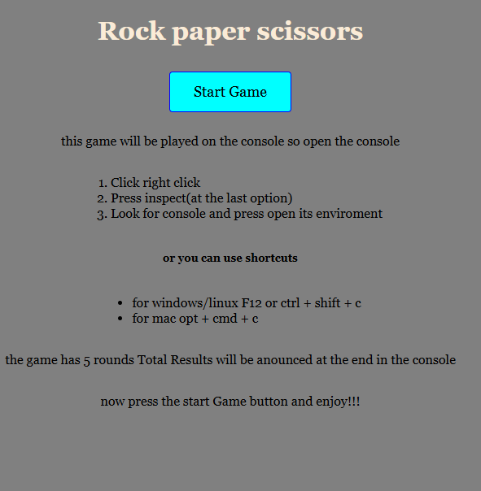

Project 1: qa-Todo-app

📖 Project Story
The Problem
As an aspiring QA Engineer, I needed a practical way to demonstrate my testing skills beyond theoretical knowledge. Most portfolio projects focus on development, but I wanted to showcase comprehensive QA processes from test planning to bug resolution.
The Solution
I built a simple but functional To-Do application and applied rigorous QA methodologies to it. The app serves as a testbed for demonstrating real-world QA practices including test case design, bug reporting, root cause analysis, and regression testing.
The Result
A complete QA portfolio piece featuring:
- 15+ carefully designed test cases
- 5 documented bugs with full lifecycle tracking
- Professional technical documentation
- Evidence of systematic testing approach
Project 2: Harmony Home
 # Harmony Home - Property Solutions Website
# Harmony Home - Property Solutions Website
Project Scope
A clean, professional website for property management and home services, focusing on user trust and service credibility.
Technical Highlights
- Responsive Design Framework
- Optimized Conversion Funnels
- Professional Brand Presentation
- Service Documentation Systems
QA Focus Areas
- Contact form functionality and validation
- Service page information accuracy
- Mobile navigation usability
- Loading performance optimization
Project 3: odin_rock-paper-scissors
The Opportunity
The Odin Project provides open-source curriculum for web development students. By contributing to this project, I gained experience working within an established codebase while practicing real-world development and testing workflows.
My Contribution
Built a fully functional Rock Paper Scissors game with comprehensive testing, focusing on:
- Game Logic Reliability: Ensuring consistent outcomes based on established rules
- User Experience: Creating intuitive interfaces with clear feedback
- Code Quality: Writing clean, documented, and testable JavaScript
QA Relevance
This project demonstrates my ability to:
- Test interactive applications with multiple decision paths.
- Identify and validate edge cases in user interactions.
- Work within project constraints and requirements.
- Apply systematic testing to game mechanics.